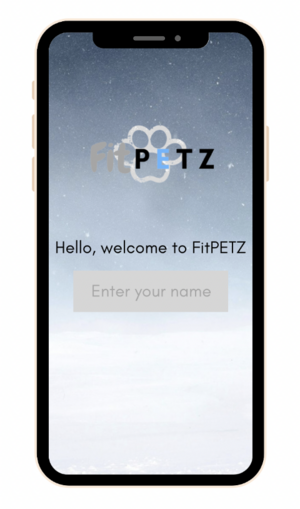

CU Supplies is an ecommerce site designed for Cornell students to sell and purchase course material. The website provides students a convenient platform to access necessary academic resources while promoting a sense of community through peer-to-peer transactions within the university ecosystem.
FitPetz
FitPetz is a mobile app designed to incentivize exercise through virtual pets and exclusive rewards. Users can enhance their fitness journey while enjoying a rewarding and interactive experience through features such as in-game currency, and special themed items.

Portfolio
Dive into my portfolio where innovation meets passion, where each project tells a story of dedication and problem-solving. Explore my website's portfolio to learn more about my experience and creative endeavors.
Research
"Deep Learning-Driven Catheter Tracking from Bi-Plane X-Ray Fluoroscopy of 3D Printed Heart Phantoms"